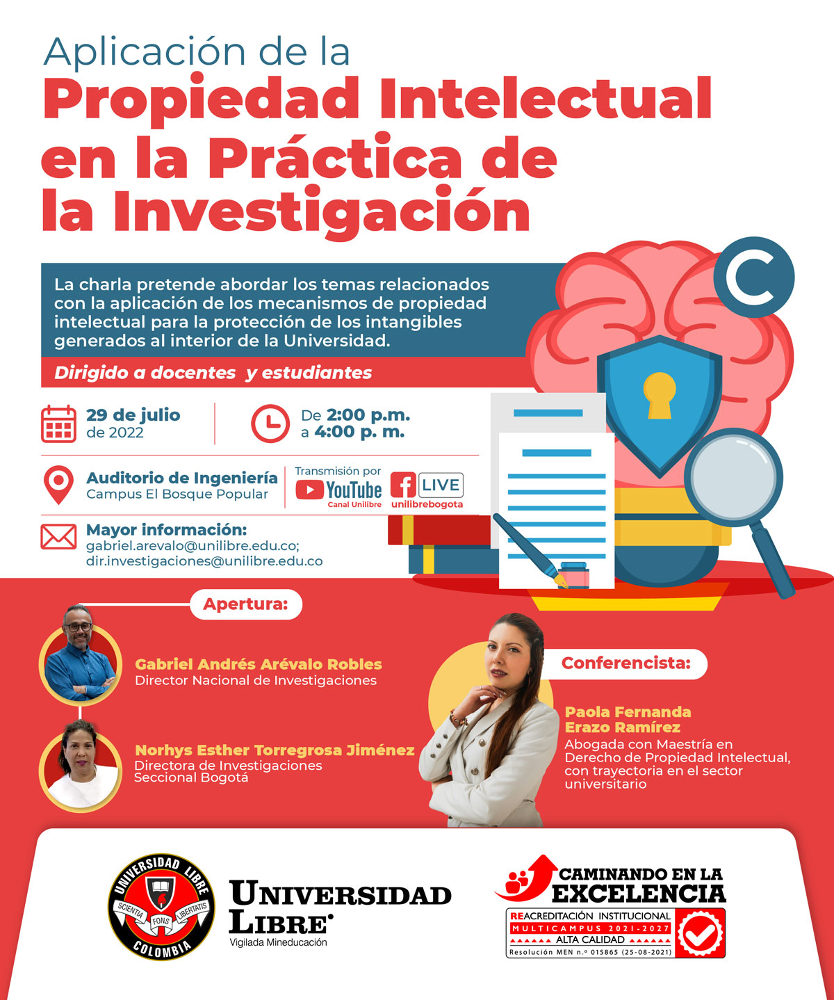

Principal
Esta es mi primera página web de 2022
En el marco de la Convocatoria Nacional de Proyectos de Investigación, Desarrollo Tecnológico e Innovación, las direcciones Nacional y Seccional de Investigaciones invitan a participar este 29 de julio de 2022 en la conferencia Aplicación de la Propiedad Intelectual en la Práctica de la Investigación, en el auditorio de Ingeniería, campus El Bosque.
El evento se realizará de 2:00 p. m. a 4:00 p. m. y contará con transmisión en vivo por las plataformas institucionales de Facebook Live (@UnilibreBogota) y YouTube (Canal Unilibre).
La conferencia abordará temas relacionados con la implementación de propiedad intelectual en la protección de intangibles generados al interior de la Universidad.
Como conferencista invitada estará la Dr. Paola Fernanda Erazo, abogada con Maestría en Derecho de Propiedad Intelectual. Las intervenciones de apertura estarán a cargo de Gabriel Andrés Arévalo, Director Nacional de Investigaciones, y Norhys Esther Torregoza, Directora Seccional de Investigaciones de Bogotá.

Universidad Libre
Universidad Libre
thgtrgfhdf
httsdfgrr
fgtbreer
En el marco de la Convocatoria Nacional de Proyectos de Investigación, Desarrollo Tecnológico e Innovación, las direcciones Nacional y Seccional de Investigaciones invitan a participar este 29 de julio de 2022 en la conferencia Aplicación de la Propiedad Intelectual en la Práctica de la Investigación, en el auditorio de Ingeniería, campus El Bosque.
El evento se realizará de 2:00 p. m. a 4:00 p. m. y contará con transmisión en vivo por las plataformas institucionales de Facebook Live (@UnilibreBogota) y YouTube (Canal Unilibre).
La conferencia abordará temas relacionados con la implementación de propiedad intelectual en la protección de intangibles generados al interior de la Universidad.
Como conferencista invitada estará la Dr. Paola Fernanda Erazo, abogada con Maestría en Derecho de Propiedad Intelectual. Las intervenciones de apertura estarán a cargo de Gabriel Andrés Arévalo, Director Nacional de Investigaciones, y Norhys Esther Torregoza, Directora Seccional de Investigaciones de Bogotá.
| Nombre |
Apellido |
|
Maria Isabel
|
Valderrama Hoyos
|
|
Mariana
|
Valderrama
|
Ir a Universidad Libre